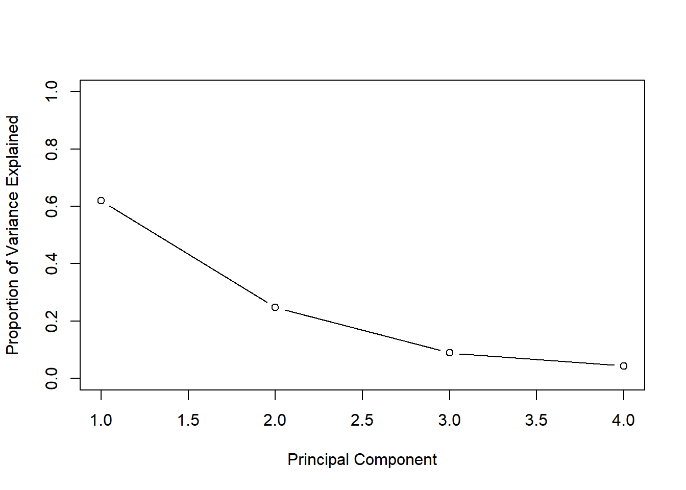
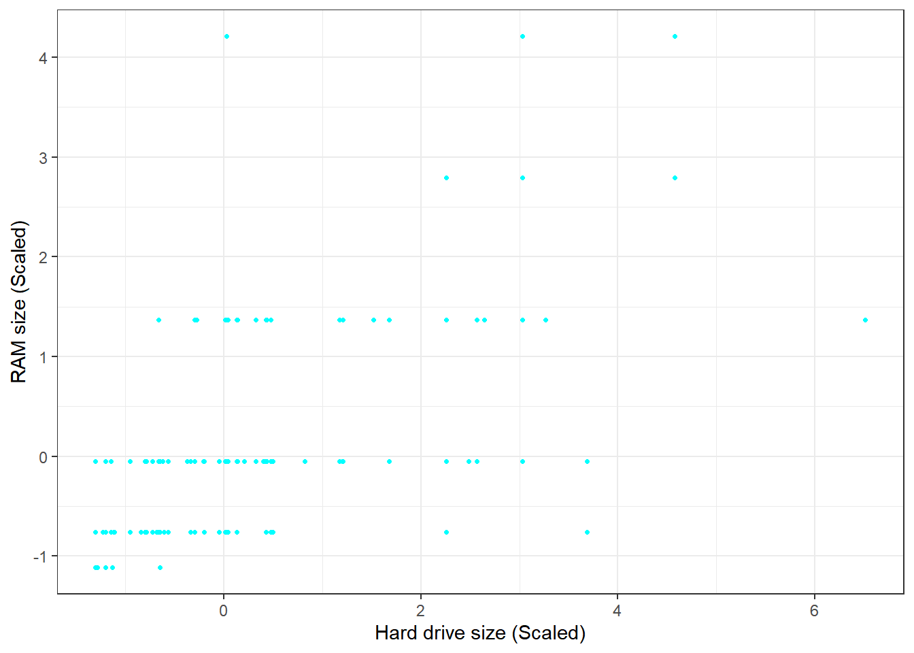
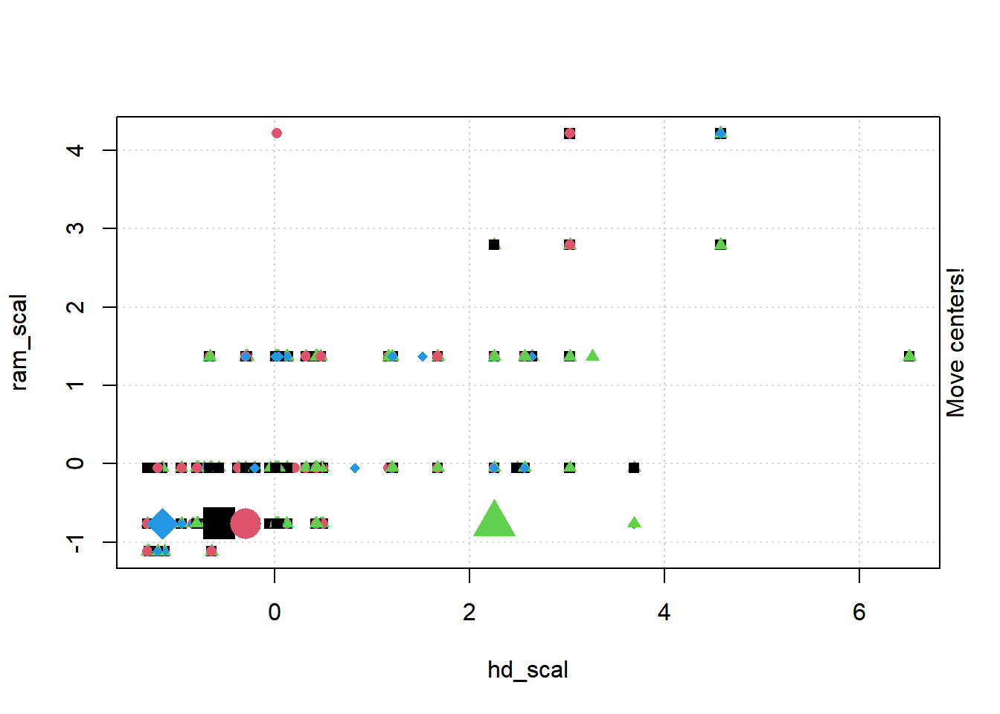
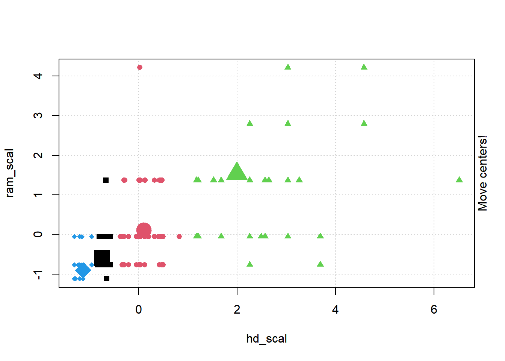
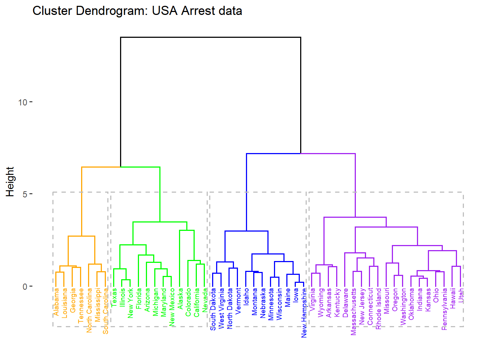

Call:
lda(Direction ~ Lag1 + Lag2, data = Smarket, subset = Year <
2005)
Prior probabilities of groups:
Down Up
0.491984 0.508016
Group means:
Lag1 Lag2
Down 0.04279022 0.03389409
Up -0.03954635 -0.03132544
Coefficients of linear discriminants:
LD1
Lag1 -0.6420190
Lag2 -0.5135293
plot(lda.fit, col="lightgreen")

Smarket.2005=subset(Smarket,Year==2005) # Creating subset with 2005 data for predictionlda.pred=predict(lda.fit,Smarket.2005)names(lda.pred)
Direction.2005
lda.class Down Up
Down 35 35
Up 76 106
data.frame(lda.pred)[1:5,]
class posterior.Down posterior.Up LD1
999 Up 0.4901792 0.5098208 0.08293096
1000 Up 0.4792185 0.5207815 0.59114102
1001 Up 0.4668185 0.5331815 1.16723063
1002 Up 0.4740011 0.5259989 0.83335022
1003 Up 0.4927877 0.5072123 -0.03792892
table(lda.pred$class,Smarket.2005$Direction)
Down Up
Down 35 35
Up 76 106
mean(lda.pred$class==Smarket.2005$Direction)
[1] 0.5595238
ANSWER:
While the best subset selection model may have the smallest training RSS, stepwise selection models, particularly those using test RSS as a criterion, aim to find models that generalize well to unseen data. The choice between forward and backward models depends on the dataset and should be evaluated using appropriate validation techniques.
Best Subset Selection Model:
Best subset selection involves fitting all possible combinations of predictors and selecting the model with the lowest training RSS. Since it considers all possible subsets of predictors, it tends to find the model that fits the training data best among all the candidates. However, selecting the best subset based solely on training RSS can lead to overfitting, especially with a large number of predictors, as the model may capture noise in the data.
Stepwise Selection Models:
Stepwise selection methods, such as forward and backward selection, involve adding or removing predictors iteratively based on certain criteria (e.g., AIC, BIC, adjusted R-squared) until a stopping criterion is met.
While stepwise selection methods aim to find a parsimonious model that generalizes well to unseen data, they typically use techniques like cross-validation to estimate the performance of the selected model on test data. Therefore, the model selected through stepwise selection often has the smallest test RSS, indicating better generalization performance compared to the best subset selection model.
Forward vs. Backward Models:
In forward selection, predictors are added one by one to the model until no significant improvement in the chosen criterion is observed. This approach may result in a model that is simpler and potentially more interpretable.
In backward elimination, all predictors are initially included in the model, and one by one, the least significant predictors are removed until no further improvement is observed. This method may lead to a more parsimonious model, especially when dealing with a large number of predictors.
The choice between forward and backward selection may vary depending on the dataset characteristics, such as the correlation between predictors and the signal-to-noise ratio. It’s essential to assess the performance of both methods through cross-validation or other validation techniques to determine which one yields the best test RSS for the specific dataset.
set.seed(123)x <-rnorm(100)eps <-rnorm(100)y <-4+9* x +2* x^2+ x^3+ epsplot(x)

plot(y)

require(leaps)
Loading required package: leaps
Warning: package 'leaps' was built under R version 4.3.3
best_subset <-regsubsets(y ~poly(x, 10, raw = T), data =data.frame(y,x, nvmax =10))bic <-summary(best_subset)$biccp <-summary(best_subset)$cpadjr2 <-summary(best_subset)$adjr2plot(bic, type ="b", pch =16, col ="blue", xlab ="Model Number", ylab ="BIC Value", main ="BIC Values for Different Models")
plot(cp, type ="b", pch =16, col ="blue", xlab ="Model Number", ylab ="Cp Value", main ="Cp Values for Different Models")

plot(adjr2, type ="b", pch =16, col ="blue", xlab ="Model Number", ylab ="Adjusted R^2 Value", main ="Adjusted R^2 Values for Different Models")
which.min(bic)
[1] 3
which.min(cp)
[1] 3
which.max(adjr2)
[1] 7
coef(best_subset, id =3)
(Intercept) poly(x, 10, raw = T)1 poly(x, 10, raw = T)2
3.970394 8.920446 1.908457
poly(x, 10, raw = T)3
1.020436
Answer:
Model 3 is the best as it has the lowest BIC and Cp values. However, Model 7, with the highest adjusted R squared value, might be overfitting as the R squared plot levels off at Model 3. In Model 3, the coefficients are: intercept (3.97), B1 (8.92), B2 (1.91), and B3 (1.02).
for_subset <-regsubsets(y ~poly(x, 10, raw = T), data =data.frame(y,x, nvmax =10), method ="forward")plot(summary(for_subset)$bic, type ="b", pch =16, col ="lightblue", xlab ="Model Number", ylab ="BIC Value", main ="BIC Values for Different Models")

plot(summary(for_subset)$cp, type ="b", pch =16, col ="lightblue", xlab ="Model Number", ylab ="Cp Value", main ="Cp Values for Different Models")
plot(summary(for_subset)$adjr2, type ="b", pch =16, col ="lightblue", xlab ="Model Number", ylab ="Adjusted R^2 Value", main ="Adjusted R^2 Values for Different Models")
which.min(summary(for_subset)$bic)
[1] 3
which.min(summary(for_subset)$cp)
[1] 3
which.max(summary(for_subset)$adjr2)
[1] 4
coef(for_subset, id =3)
(Intercept) poly(x, 10, raw = T)1 poly(x, 10, raw = T)2
3.970394 8.920446 1.908457
poly(x, 10, raw = T)3
1.020436
Answer Model 3 is the best again, having the lowest BIC and Cp values. While Model 4 has the highest adjusted R squared value, Model 3 shows a similar value in the plot. In Model 3, the coefficients are: intercept (3.97), B1 (8.92), B2 (1.91), and B3 (1.02).
bac_subset <-regsubsets(y ~poly(x, 10, raw = T), data =data.frame(y,x, nvmax =10), method ="backward")plot(summary(bac_subset)$bic, type ="b", pch =16, col ="cyan", xlab ="Model Number", ylab ="BIC Value", main ="BIC Values for Different Models")
plot(summary(bac_subset)$cp, type ="b", pch =16, col ="lightgreen", xlab ="Model Number", ylab ="Cp Value", main ="Cp Values for Different Models")
plot(summary(bac_subset)$adjr2, type ="b", pch =16, col ="magenta", xlab ="Model Number", ylab ="Adjusted R^2 Value", main ="Adjusted R^2 Values for Different Models")
which.min(summary(bac_subset)$bic)
[1] 4
which.min(summary(bac_subset)$cp)
[1] 4
which.max(summary(bac_subset)$adjr2)
[1] 4
coef(bac_subset, id =3)
(Intercept) poly(x, 10, raw = T)1 poly(x, 10, raw = T)2
3.9620068 9.8934015 1.9689642
poly(x, 10, raw = T)5
0.1748705
Answer:
Model 4, using backwards stepwise selection, outperforms others across all three metrics. The coefficients are as follows: intercept (3.96), B1 (9.89), B2 (1.97), and B3 (0.17).